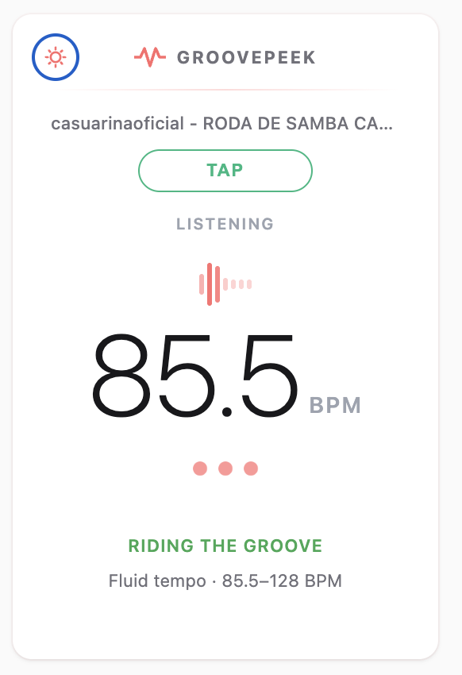
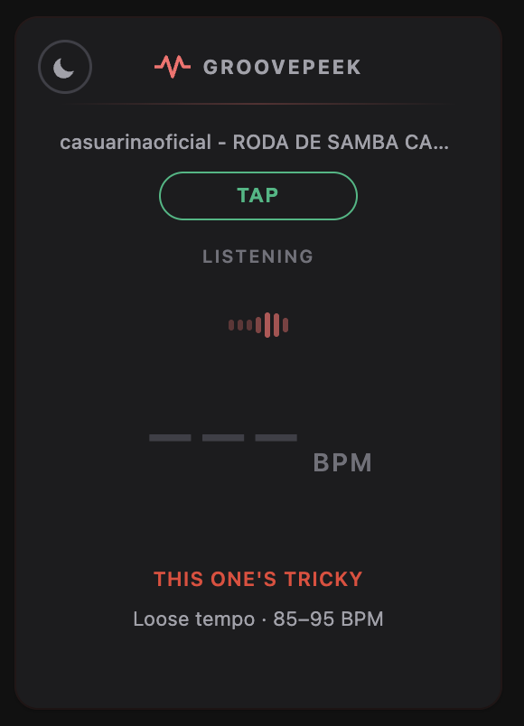
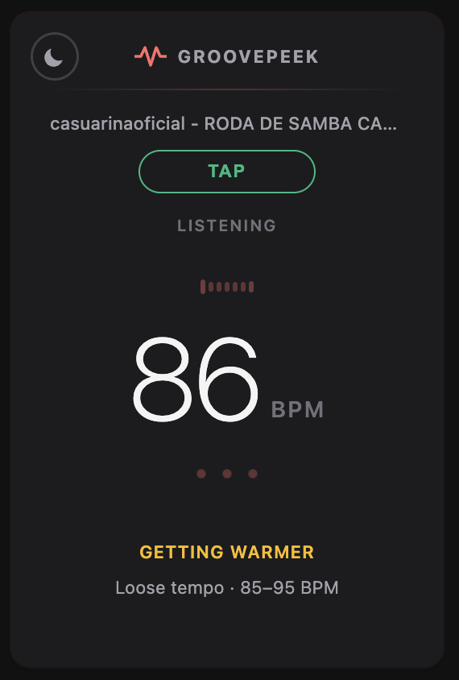
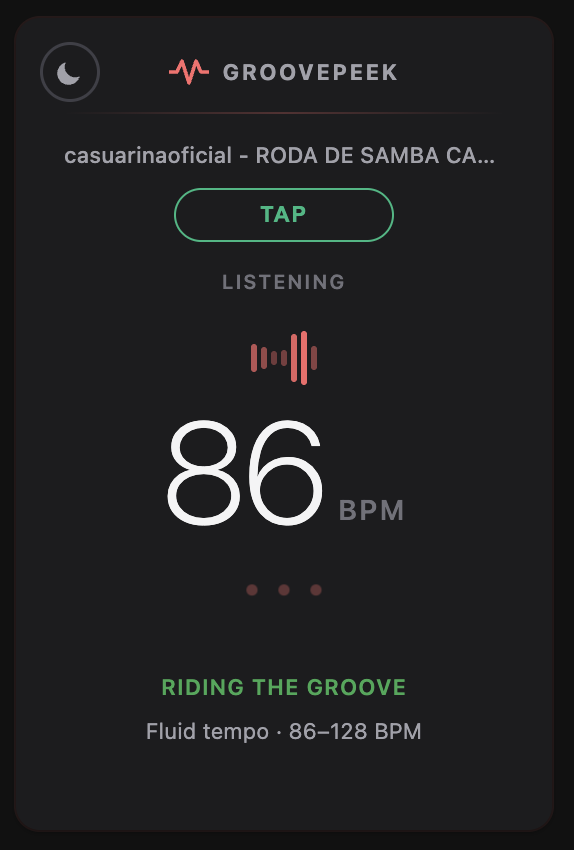

Everything you need, nothing you don't
Play a song on YouTube, YouTube Music, or Spotify. Click the extension. See the tempo — no setup, no configuration.
Know how sure the reading is. GroovePeek shows a beat-clarity label and BPM range as it locks onto the groove.
A subtle pulse syncs to the detected tempo so you can feel it visually — handy for DJs, producers, and dancers.
Not sure about the reading? Tap the button along with the beat and get your own manual measurement side by side.
You'll always know how confident the reading is



Who is it for?
Quickly identify the BPM of any track before adding it to a set or sampling it in a project.
Pin down the exact tempo of a song before building a routine around it.
Match your practice metronome to a reference track without leaving the browser.
Because sometimes you just want to know how fast that song goes.
Your privacy matters
GroovePeek works entirely inside your browser. It never records your audio, never sends data to any server, and never tracks anything about you or your listening habits.
The only thing it remembers locally is whether you prefer light or dark mode.